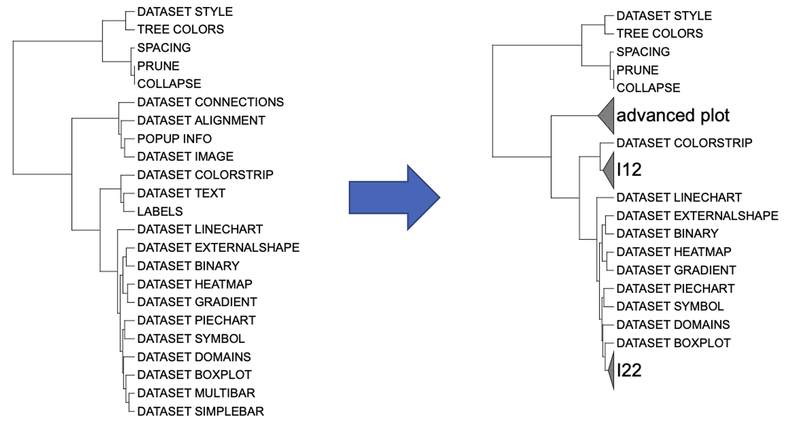
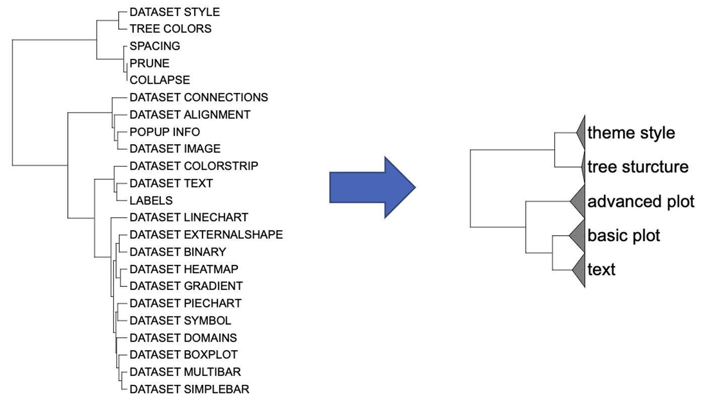

COLLAPSE template are used to collapse branches.
Typically, The user merges branches A and B by folding them at their most recent common ancestor (MRCA). However, it is normally hard for users to declare the MRCA node directly. The node name is usually generated automatically by software rather than specified by the user when building the phylogenetic tree. Some programs do not even generate the node name.
This section has taken these complicated cases into account, and provide the corresponding solution, so that users can easily prepare the input data.
This basic grammar for range id is written as:
branch_A|branch_B.
This section provides an example of how to collapse branches using dataset 1 (refer to the Dataset for detail information) document for detailed information). Users can download the data locally from the provided link above. The files are read using a relative path in this document, so please adjust the path based on actual situation.
The first step is to load the newick format tree file
tree_of_itol_templates.tree and its corresponding metadata
template_groups.
library(itol.toolkit)
tree <- system.file("extdata",
"tree_of_itol_templates.tree",
package = "itol.toolkit")
data("template_groups")Suppose that the user wants to collapse
DATASET_SIMPLEBAR and DATASET_MULTIBAR into
one branch; DATASET_TEXT and LABELS into
another branch;DATASET_ALIGNMENT,
DATASET_CONNECTIONS, DATASET_IMAGE and
POPUP_INFO which belong to advanced visualization into one
branch:
range_ids <- c("DATASET_SIMPLEBAR|DATASET_MULTIBAR",
"DATASET_TEXT|LABELS",
"DATASET_CONNECTIONS|POPUP_INFO")
unit_1 <- create_unit(data = range_ids,
key = "E001_collapse_1",
type = "COLLAPSE",
tree = tree)
write_unit(unit_1,
paste0(getwd(),"/E001_collapse_1.txt"))
While the first two sets of folded branches are relatively simple to
define because no other branches exist between them, the third set of
folded branches is slightly complex, requiring the user to select the
two branches with the longest spacing among the four to accurately
describe the extent to be folded. Writing the code as
DATASET_ALIGNMENT | POPUP_INFO may result in the omission
of the DATASET_CONNECTIONS branch, because the branch does
not belong to MCRA of DATASET_ALIGNMENT and
POPUP_INFO.
Because the process of defining branches is very cumbersome and requires manual judgment, this function is not used frequently in the 23 templates in iTOL v6.
Although we used a tip label in the above example, using node names
directly is more convenient if it is available. Thus, the
itol.toolkit also enable you to define the collapsed branch
using the node name directly .
The tree provided by itol.toolkit dataset
1 including the node labels:
ape::read.tree(tree)
# Phylogenetic tree with 23 tips and 22 internal nodes.
#
# Tip labels:
# SPACING, COLLAPSE, PRUNE, TREE_COLORS, DATASET_STYLE, DATASET_CONNECTIONS, ...
# Node labels:
# I1, I2, tree_sturcture, I4, theme_style, I6, ...
#
# Rooted; includes branch lengths.Therefore, you could specify the group you want to merge directly.
group_names <- unique(c("tree_sturcture", "theme_style", "text", "basic_plot"))
unit_2 <- create_unit(data = group_names,
key = "E002_collapse_2",
type = "COLLAPSE",
tree = tree)
write_unit(unit_2,
paste0(getwd(),"/E002_collapse_2.txt"))
If you have questions about how to upload results files from iTOL toolkit for interactive visualization on iTOL, please refer to the Operation document for step-by-step guidance.
IOCAS, weiyLiu@outlook.com↩︎
CACMS, njbxhzy@hotmail.com↩︎
IOCAS, tongzhou2017@gmail.com↩︎